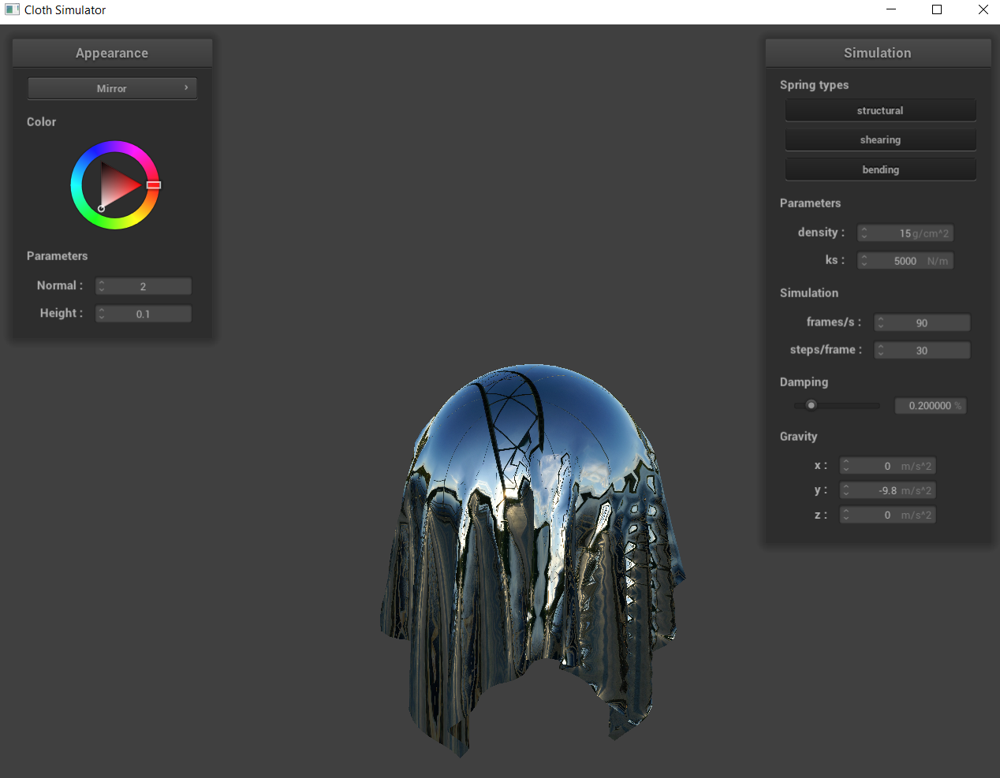

Overview
In this project, we worked on creating the grid system for a cloth, where the cloth was made up of points and springs between them. We applied force (gravity and spring forces) to the points and simulated the cloth moving fluidly through space. We then focused on collision detection per individual point of the cloth (a form of Pixel Perfect Collision), where we allowed the cloth to realistically collide with spheres, planes, and even itself (where it could fold onto itself). Lastly, we rendered shading onto the cloth, thus making any texture or material we want with cloth-like properties.
Part I: Masses and springs
Below are images of our grid.
 Only Shearing
Only Shearing
|
Part II: Simulation via numerical integration
The lower the spring constant gets, the less our cloth bends and the straighter our result becomes. This is because there isn’t much force pulling the springs together, so the cloth behaves more like individual points falling down than one unified object. In contrast, when the spring constant is high, the fabric bends and folds more, because there’s stronger force keeping the points together. Since a cloth is one unified object, a higher spring constant is usually more realistic.
|
Increasing Spring Constant
|
Likewise, when density is decreased, the cloth falls flat, where it sinks down in every point almost equally. This sinking follows from the fact that with less dense objects, each point is again treated more independently of each other, so they fall independently of each other, all uniformly since they have a uniform force of gravity acting on them. However, when density is increased, the very ends of the fabric furthest away from the pins fall first. Then those furthest away points carry the points near it down too, and thus the whole fabric falls naturally (except for the two pinned points of course). With more density, the fall is much more realistic, since in real life the furthest points from the pinned points would be affected by force movements first.
Finally, when damping is decreased, the fabric falls a bit curled inwards, but otherwise mostly straight. In contrast, when the damping is high, the cloth folds within itself much more while falling. This observation makes sense, since the more damped a system is, the more spring forces would affect it, so the more complex inner folds would develop as the whole fabric moves with gravity.
Below are a few angles of a four pinned cloth. We modified the parameters slightly to make the spring constant 10,000 as opposed to 5,000, as we thought a higher spring constant looked visually more realistic and smoother.
Part III: Handling collisions with other objects
When we test sphere collision with spring constants 5000, 500, and 50000, we notice that the higher spring constants, the much more our fabric bends. Since self collisions haven’t been implemented yet, we noticed that the cloth can bend out of itself, jetting out of its fabric like a glitchy game. For the case of sphere collision, a less bendy drape is more natural than an overly curled drape, so the spring constant of 500 appears the most realistic if we were to assume we had normal, light and malleable cloth.
Below is our cloth colliding with and resting on top a plane.
Part IV: Handling self-collisions
Below are three images of our cloth in the process of falling. At the beginning of the fall, in the middle of the fall, and at the resting spot.
Below is our cloth colliding with and resting on top a plane.
 At Rest
At Rest
|
Now we compare the At Rest time with different degrees of density and spring constants.
As we see below, when the density is lower, our cloth folds outwards. When density is higher, the cloth folds inwards. This observation makes sense because, the more dense an object is, the more it’ll pull itself inwards. And the less dense an object is, the more it’ll spread out.
Next, when the spring constant is lower, our points aren’t attracted to each other as much, so the folding appears very wrinkly and bumpy because the points are behaving more independently of each other. While when the spring constant is higher, each point is very dependent on one another, so the folding looks smoother and less wrinkly.
Part V: Shaders
Part V (Task I): Diffuse Shading
A shader program runs separately on the GPU and allows us to create rendering effects on 3D models. The vertex shader allows us to modify vertex positions and how they are translated from 3D to 2D space, whereas the fragment shader allows us to control the color, which in turns allows us to create shadows, bumps, and lighting effects. Together the two shaders create better, more complex effects such as displacement mapping.
Part V (Task II): Blinn-Phong Shading
The Blinn-Phong shading model combines the ambient lighting, the diffuse lighting that is shown evenly across a surface, and specular lighting that will show bright areas where light reflects into our view at the mirror angle of the light source. Combined, these three lightings are the Blinn-Phong model and create a realistic lighting effect on our 3D objects.
 Ambient only
Ambient only
|
Part V (Task III): Texture Mapping
Below are three images of our texture mapping from different angles different times. We chose a picture of the Canadian Giant Rubber Duck as our texture pack. We hope you enjoy!
Part V (Task IV): Displacement and Bump Mapping
Below are images of our Sphere and cloth (pre fall and post fall) using Bump and Displacement, using the same Giant Rubber Ruck texture from Task 3.
In both the bump mapping and displacement mapping, we can see our custom texture, which is a picture of the largest rubber duck in the world. Although we can see the texture pattern in both, the displacement mapping is much more detailed and complex. Bump mapping can only change colors, so it can only show a rudimentary perception of depth, whereas displacement mapping provides actual depth that shows the texture in lighting much better. The deeper shadows and brighter highlights improve the look of the texture a lot.
|
Displacement, Before Falling
|
|
Displacement, After Falling
|
When changing the vertical and horizontal resolution from 16 to 128, it was honestly very difficult to tell differences between two. For bump mapping, we thought they looked essentially the same. For displacement mapping, we could see slightly more detailed edges in the textures. Lighting in the higher resolution images was slightly more even as well. These effects are shown below.
|
Bump, Before Falling, -16
|
|
Displacement, Before Falling, -16
|
|
Displacement, After Falling, -16
|
|
Bump, Before Falling, -128
|
|
Displacement, Before Falling, -128
|
|
Bump, After Falling, -128
|
|
Displacement, After Falling, -128
|
Part V (Task V): Environment-mapped Reflections
Below is our mirror from before the cloth falls and after the cloth falls.
|

Mirror, After Falling
|